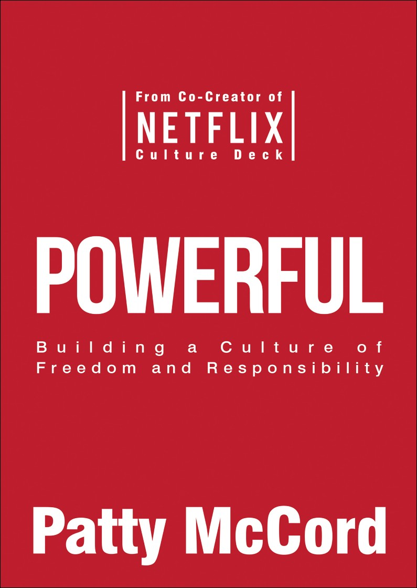

Powerful - Building a culture of freedom and responsibility¶

Record the notes when I read the book Powerful
The Greatest Motivation Is Contributing to Success¶
Treat People Like Adults
-
The greatest team achievements are driven by all team members understanding the ultimate goal and being free to creatively problem-solve in order to get there.
-
The strongest motivator is having great team members to work with, people who trust one another to do great work and to challenge one another.
-
The most important job of managers is to ensure that all team members are such high performers who do great work and challenge one another.
-
You should operate with the leanest possible set of policies, procedures, rules, and approvals, because most of these top-down mandates hamper speed and agility.
-
Discover how lean you can go by steadily experimenting. If it turns out a policy or procedure was needed, reinstate it. Constantly seek to refine your culture just as you constantly work to improve your products and services.
Every Single Employee Should Understand the Business¶
Communicate Constantly About the Challenge
-
Employees at all levels want and need to understand not only the particular work they are assigned and their team’s mission, but also the larger story of the way the business works, the challenges the company faces, and the competitive landscape.
-
Truly understanding how the business works is the most valuable learning, more productive and appealing than “employee development” trainings. It’s the rocket fuel of high performance and lifelong learning.
-
Communication between management and employees should genuinely flow both ways. The more readers encourage questions and suggestions and make themselves accessible for give-and-take, the more employees at all levels will offer ideas and insights that will amaze you.
-
If someone working for you seems clueless, chances are they have not been told information they need to know. Make sure you haven’t failed to give it to them.
-
If you don’t tell your people about how the business is doing and the problems being confronted—good, bad, and ugly—then they will get that information somewhere else, and it will often be misinformation.
-
The job of communicating is never done. It’s not an annual or quarterly or even monthly or weekly function. A steady stream of communication is the lifeblood of competitive advantage.
Humans Hate Being Lied To and Being Spun¶
Practice Radical Honesty
-
People can handle being told the truth, about both the business and their performance. The truth is not only what they need but also what they intensely want.
-
Telling the truth about perceived problems, in a timely fashion and face to face, is the single most effective way to solve problems.
-
Practicing radical honesty diffuses tensions and discourages backstabbing; it builds understanding and respect.
-
Radical honesty also leads to the sharing of opposing views, which are so often withheld and which can lead to vital insights.
-
Failing to tell people the truth about problems in their performance leads to an undue burden being shouldered by managers and other team members.
-
The style of delivery is important; leaders should practice giving critical feedback so that it is specific and constructive and comes across as well intentioned.
-
Consider setting up a system for colleagues to offer one another critiques. We created a successful one at Netflix and instituted an annual feedback day for the whole company to share comments with anyone they had thoughts for.
-
Model openly admitting when you are wrong. In addition, talk about what went into your decisions and where you went wrong. That encourages employees to share ideas and opposing views with you, even if they directly contradict your position.
Debate Vigorously (激烈辩论)¶
Cultivate Strong Opinions and Argue About Them Only on the Facts
只有实施才能捍卫观点
-
Intense, open debate over business decisions is thrilling for teams, and they will respond to the opportunity to engage in it by offering the very best of their analytical powers.
-
Set terms of debate explicitly. People should formulate strong views and be prepared to back them up, and their arguments should be based primarily on facts, not conjecture.
-
Instruct people to ask one another for explanations of their views and of the problems being debated, rather than making assumptions about these things.
-
Be selfless in debating. That means being genuinely prepared to lose your case and openly admitting when you have.
-
Actually orchestrate debates. You can have people formally present cases, maybe even have them get up onstage. Try having people argue the opposing side, poking holes in their own position. Formal debates, for which people prepare, often lead to breakthrough realizations.
-
Beware of data masquerading as fact; data is only as good as the conclusions it allows you to draw from it. People will be drawn to data that supports their biases. Hold your data up to rigorous scientific standards.
-
Debates among smaller groups are often best because everyone feels freer to contribute—and it’s more noticeable if they don’t. Smaller groups also aren’t as prone to groupthink as large groups are.
Build the Company Now That You Want to Be Then¶
Relentlessly Focus on the Future
-
To stay agile and move at the speed of change, hire the people you need for the future now.
-
On a regular basis, take the time to envision what your business must look like six months from now in order to be high-performing. Make a movie of it in your head, imagining how people are working and the tools and skills they have. Then start immediately making the changes necessary to create that future.
-
More people will not necessarily do more work or better work; it’s often better to have fewer people with more skills who are all high performers.
-
Successful sports teams are the best model for managers; they are constantly scouting for new talent and culling their current roster. You’re building a team, not raising a family.
-
Some members of your team may simply not be able to grow into high performers for the future you’re heading to. It is not the job of the business to invest in developing them; the job is to develop the product and market.
-
Develop and promote from within when that’s the best option for performance; when it’s better to hire from outside, be proactive in doing so.
-
The ideal is for people to take charge of developing themselves; this drives optimal growth for both individuals and companies.
Someone Really Smart in Every Job¶
Have the Right Person in Every Single Position
- Hiring great performers is a hiring manager’s most important job.
Hiring managers should actively develop their own pipelines of talent and take the lead in all aspects of the hiring process. They are the lead recruiters.
-
The teams and companies most successful in staying ahead of the curve manage to do so because they proactively replenish their talent pool.
-
Retention is not a good measure of team-building success; having a great person in every single position on the team is the best measure.
-
Sometimes it’s important to let even people who have done a great job go in order to make space for high performers in new functions or with different skills.
-
Bonuses, stock options, high salaries, and even a clear path to promotion are not the strongest draw for high performers. The opportunity to work with teams of other high performers whom they’ll learn from and find it exhilarating to work with is by far the most powerful lure.
-
Making a great hire is not about bringing in an “A player”; it’s about finding a great match for your needs. Someone who is a high performer for one team may not be for another team.
-
Get beyond the resume. Be really creative about where you look for talent. Dig further than a list of experiences. Consider wide-ranging experiences and focus on people’s fundamental problem-solving abilities.
-
Make the interviewing experience extremely impressive all the way through. You want every single person you interview to want to join the company at the end of the process.
Pay People What They’re Worth to You¶
-
The skills and talents for any given job will not match a template job description, and salaries should not be predetermined according to templates.
-
Information from salary surveys is always behind current market conditions; do not rely on them in making salary offers.
-
Consider not only what you can afford given your current business but also what you will be able to afford given the additional revenue a new hire might enable you to bring in.
-
Rather than paying at some percentile of top of market, consider paying top of market, if not for all roles, then for those that are most important to your growth.
-
Signing bonuses can lead to the impression of a salary decrease in the year after the person joins; paying the salary you need in order to bring in a top performer is the better option.
-
Being transparent with staff about compensation encourages better judgment about salaries and undercuts biases, as well as offering the occasion for more honest dialogue about the contributions of various
The Art of Good Good-byes¶
-
Employees need to be able to see whether their talents and passions are a good match for the future you are heading to, in order to determine whether they may be a better fit at another firm.
-
People should hear frequently about how well they’re performing.Even if doing away with the annual performance process is not feasible for you, institute much more frequent meetings to discuss performance.
-
If doing away with the annual review process is an option for you, try it! The process is a big waste of time and can become a stand-in for real-time information about performance.
-
Either make performance improvement plans genuine efforts to help people improve performance or get rid of them.
-
The chances you’ll get sued by an employee who is let go are vanishingly slim, especially if you have been responsibly and regularly sharing with that person the problems you perceive with their performance.
-
The focus on employee engagement is misplaced; there is not necessarily a correlation between high engagement and high performance. There is also not necessarily a correlation between high performance in a current job and high performance in the job of the future.
-
Use my algorithm in making personnel decisions: Is what this person loves to do, that they’re extraordinarily good at doing, something we need someone to be great at?
-
All managers can actively help their exiting team members find great new opportunities; goodbyes can be very good.
-
Managers who adopt this more fluid approach to performance review and team building come to clearly see that it is better for all concerned and better for overall team performance.